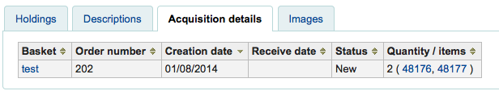
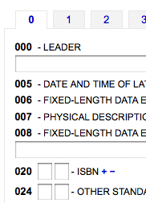
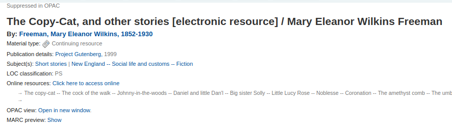
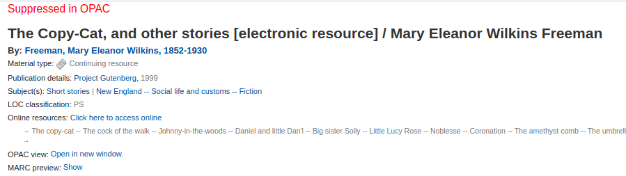
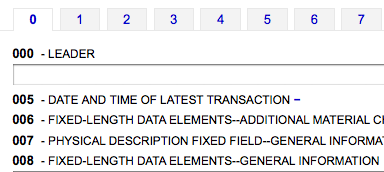
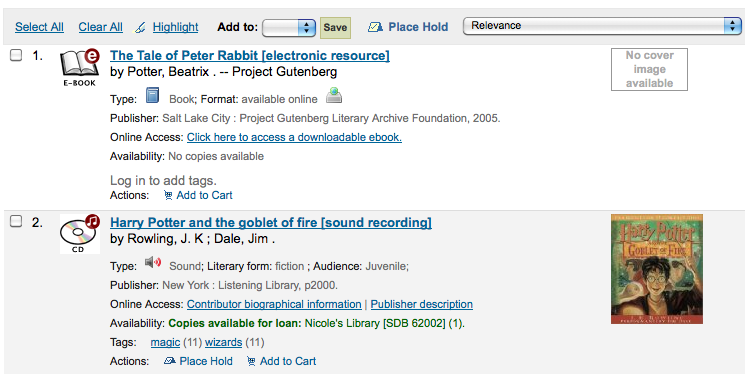
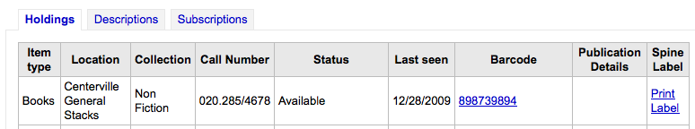

Cataloging
Get there: More > Administration > Global System Preferences > Cataloging
Display
AcquisitionDetails
Default: Display
Asks: ___ acquisition details on the biblio detail page.
Values:
Display
Don’t display
Description:
This preference controls whether a tab will show on the detail page in the staff client that includes detailed acquisitions information for the title. This tab will include links to order information stored in the acquisitions module.

hide_marc
Default: Display
Asks: ___ MARC tag numbers, subfield codes and indicators in MARC views.
Values:
Display – shows the tag numbers on the cataloging interface

Don’t display – shows just descriptive text when cataloging

IntranetBiblioDefaultView
Default: ISBD form
Asks: By default, display biblio records in ___
Values:
ISBD form – displays records in the staff client in the old card catalog format
See ISBD preference for more information
Labelled MARC form – displays records in the staff client in MARC with text labels to explain the different fields
MARC form – displays records in the staff client in MARC
normal form – visual display in the staff client (for the average person)
Description:
This setting determines the bibliographic record display when searching the catalog on the staff client. This setting does not affect the display in the OPAC which is changed using the BiblioDefaultView preference under the OPAC preference tab. This setting changes the look of the record when first displayed. The MARC and ISBD views can still be seen by clicking in the sidebar.
ISBD
Default: See ISBD view configuration <https://wiki.koha-community.org/wiki/ISBD_view_configuration> on the wiki.
Asks: Use the following as the ISBD template:
Description:
This determines how the ISBD information will display in the staff client. Elements in the list can be reordered to produce a different ISBD view. ISBD, the International Standard Bibliographic Description, was first introduced by IFLA (International Federation of Library Associations) in 1969 in order to provide guidelines for descriptive cataloging. The purpose of ISBD is to aid the international exchange of bibliographic records for a variety of materials.
LabelMARCView
Default: Don’t
Asks: ___ collapse repeated tags of the same type into one tag entry.
Values:
Do – will combine all identical tag numbers under one heading in the MARC view in the OPAC and Staff Client

Don’t – will list all of the tags individually in the MARC view in the OPAC and Staff Client

MARCFieldDocURL
Default: blank
Asks: Use ___ as the URL for MARC field documentation. Possible substitutions are {MARC} (marc flavour, eg. “MARC21” or “UNIMARC”), {FIELD} (field number, eg. “000” or “048”), {LANG} (user language, eg. “en” or “fi-FI”). If left empty, the format documentation on http://loc.gov (MARC21) or http://archive.ifla.org (UNIMARC) is used. For example http://fielddoc.example.com/?marc={MARC}&field={FIELD}&language={LANG}
Description:
This preference lets you choose the source of the MARC documentation available through the “?” next to MARC fields.
MergeReportFields
Asks: ___ fields to display for deleted records after merge
Description:
When merging records together you can receive a report of the merge process once it’s done, this preference lets you set the default values for this report.
Example: ‘001,245ab,600’ displays:
value of 001
subfields a and b of fields 245
all subfields of fields 600
NotesToHide
Asks: Don’t show these ___ note fields in title notes separator (OPAC record details) and in the description separator (Staff client record details).
Description:
This preference lets you define which of your note fields are hidden from the title notes (OPAC) and descriptions (Staff) tabs. Enter the values as a comma separated list. For example to hide the local note and the bibliography note in MARC21 enter 504, 590.
OpacSuppression, OpacSuppressionByIPRange, OpacSuppressionRedirect, and OpacSuppressionMessage
OpacSuppression
Asks: ___ bibliographic records marked as suppressed from OPAC search results.
Default: Don’t hide
Values:
Don’t hide
Will show records in OPAC search results even if they are marked as suppressed
Hide
Will not show records in OPAC search results if they’re marked as suppressed
Description:
This preference controls hiding of bibliographic records in the OPAC. Enter “1” in the field mapped to the suppress index (942$n in MARC21, no official field in UNIMARC) in each bibliographic record you want to hide from the OPAC. The indexer then hides it from display in OPAC but will still display it in the staff interface.
注解
An authorized value should be set for the MARC21 942$n field (or the equivalent UNIMARC field) to eliminate errors. You can use the YES_NO authorized value category, or create a new one titled SUPPRESS, for example, with a value of 0 for don’t suppress and 1 for suppress.
警告
If this preference is set to ‘hide’ and you have the 942$n field set to 1, it will hide the entire bibliographic record, not just an individual item.
注解
Suppressed records will show a note in the staff interface indicating that they are suppressed from view in the OPAC.

This note can be styled by using the IntranetUserCSS preference to stand out more if you’d like.

Fot the example above, the following snippet was added to IntranetUserCSS
.suppressed_opac {
font-size: larger;
color: red;
}
OpacSuppressionByIPRange
Asks: Restrict the suppression to IP addresses outside of the IP range ___ (Leave blank if not used. Define a range like 192.168..)
Description:
If you want to further control suppression you can set an IP address range to still show suppressed items to. Define a range like 192.168.. If you don’t want to limit suppression in this way, leave the IP field blank.
OpacSuppressionRedirect
Asks: Redirect the opac detail page for suppressed records to ___
Values:
the 404 error page (‘Not found’).
an explanatory page (‘This record is blocked’).
Default: an explanatory page (‘This record is blocked’)
Description:
This preference lets you decide what the patrons will see in the OPAC when a record is suppressed. You can either show the patron a 404 error page or an explanatory page when they try to see a suppressed record. You can change the message of the explanatory page with the OpacSuppressionMessage system preference.
OpacSuppressionMessage
Asks: Display the following message on the redirect page for suppressed bibliographic records ___.
Description:
If you chose to show an explanatory page when a patron tries to access a suppressed bibliographic record, you can customize the message with HTML.
SeparateHoldings and SeparateHoldingsBranch
SeparateHoldings default: Don’t separate
SeparateHoldingsBranch default: home library
Asks: ___ items display into two tabs, where the first tab contains items whose ___ is the logged in user’s library. The second tab will contain all other items.
SeparateHoldings values:
Don’t separate
Separate
SeparateHoldingsBranch values:
holding library
home library
Description:
This preference lets you decide if you would like to have the holding information on the bibliographic detail page in the staff client split in to multiple tabs. The default is to show all holdings on one tab.

URLLinkText
Default: Online Resource
Asks: Show ___ as the text of links embedded in MARC records.
Description:
If the 856 field does not have a subfield 3 or y defined, the OPAC will say ‘Click here to access online.^ If you would like the field to say something else enter that in this field.
UseControlNumber
Default: Don’t use
Asks: ___ record control number ($w subfields) and control number (001) for linking of bibliographic records.
Values:
Don’t use
When clicking on links to titles that appear next to ‘Continues’ and ‘Continued by’ in the detail display Koha will perform a title search
Use
When clicking on links to titles that appear next to ‘Continues’ and ‘Continued by’ in the detail display Koha will perform a control number (MARC field 001) search
Important
Unless you are going in and manually changing 773$w to match your rigorously-defined bibliographic relationships, you should set this preference to “Don’t use” and instead set EasyAnalyticalRecords to “Display”
Description:
If you have a serial called “Journal of Interesting Things” which has a separate record from when it was called “Transactions of the Interesting Stuff Society,” you could add linking fields to indicate the relationship between the two records. UseControlNumber allows you to use your local accession numbers for those links. In MARC21, the relevant sections of the two records might look like this:
=001 12345 =110 2_$aInteresting Stuff Society. =245 10$aTransactions of the Interesting Stuff Society. =785 00$aInteresting Stuff Society$tJournal of Interesting Things.$w12346 =001 12346 =110 2_$aInteresting Stuff Society. =245 10$aJournal of Interesting Things. =780 00$aInteresting Stuff Society$tTransactions of the Interesting Stuff Society.$w12345
With UseControlNumber set to ‘Use’, the 78x links will use the Control Numbers is subfield $w, instead of doing a title search on “Journal of Interesting Things” and “Transactions of the Interesting Stuff Society” respectively.
Exporting
BibtexExportAdditionalFields
Asks: Include following fields when exporting BibTeX
Description:
Use one line per tag in the format BT_TAG: TAG$SUBFIELD ( e.g. lccn: 010$a )
To specify multiple marc tags/subfields as targets for a repeating BibTex tag, use the following format: BT_TAG: [TAG2$SUBFIELD1, TAG2$SUBFIELD2] ( e.g. notes: [501$a, 505$g] )
All values of repeating tags and subfields will be printed with the given BibTeX tag.
Use ^@^ ( with quotes ) as the BT_TAG to replace the bibtex record type with a field value of your choosing.
警告
Requires YAML syntax to work
This means
Make sure there is NO space between the field name and the colon
Make sure there IS a space between the colon and the value
If there are more than one values for the same field, put them in square brakets, separated by comma and space
Make sure each pair is on its own line
RisExportAdditionalFields
Asks: Include following fields when exporting RIS
Description:
Use one line per tag in the format RIS_TAG: TAG$SUBFIELD ( e.g. LC: 010$a )
To specificy multiple marc tags/subfields as targets for a repeating RIS tag, use the following format: RIS_TAG: [TAG2$SUBFIELD1, TAG2$SUBFIELD2] ( e.g. NT: [501$a, 505$g] )
All values of repeating tags and subfields will be printed with the given RIS tag.
Use of TY ( record type ) as a key will replace the default TY with the field value of your choosing.
警告
Requires YAML syntax to work
This means
Make sure there is NO space between the field name and the colon
Make sure there IS a space between the colon and the value
If there are more than one values for the same field, put them in square brakets, separated by comma and space
Make sure each pair is on its own line
Requires YAML syntax to work
Importing
AdditionalFieldsInZ3950ResultSearch
Asks: Display the MARC field/subfields ___ in the ‘Additional fields’ column of Z39.50 search results (use comma as delimiter e.g.: “001, 082$ab, 090$ab”).
Description:
This preference lets you define additional fields and subfields to display on the Z39.50 result list.
AggressiveMatchOnISBN
Default: don’t
Asks: When matching on ISBN with the record import tool, ___ attempt to match aggressively by trying all variations of the ISBNs in the imported record as a phrase in the ISBN fields of already cataloged records.
Values:
do
don’t
Description:
This preference allows you to choose to alter the ISBN matching rule used when staging records for import to be more aggressive. This means that all text will be stripped from the ISBN field so that a pure number match is possible. If this preference is set to “Don’t” then Koha will find a match only if the ISBN fields are identical.
AggressiveMatchOnISSN
Default: don’t
Asks: When matching on ISSN with the record import tool, ___ attempt to match aggressively by trying all variations of the ISSNs in the imported record as a phrase in the ISSN fields of already cataloged records.
Interface
advancedMARCeditor
Default: Don’t display
Asks: ___ descriptions of fields and subfields in the MARC editor.
Description:
This preference determines whether or not MARC field names will be present when editing or creating MARC records.
Values:
Display

Don’t display

DefaultClassificationSource
Default: Dewey Decimal System
Asks: Use ___ as the default classification source.
Values:
ANSCR (Sound Recordings)
Dewey Decimal Classification
Library of Congress Classification
Other/Generic Classification Scheme
SuDoc Classification (U.S. GPO)
Universal Decimal Classification
Note
Adding another classification under Administration > Classification Sources will make it show up in this list as well.
DefaultSaveRecordFileID
Asks: When saving in a MARC/MARCXML file in the advanced cataloging editor or exporting from the detail page in the staff interface, use the ___ in the file name.
Default: bibliographic record number
Values:
bibliographic record number
control number
Description:
This preference determines what is the default file name that is used when downloading a MARC record.
Choosing ‘bibliographic record number’ will result in a file name like bib-123456.mrc where 123456 is the biblionumber.
Choosing ‘contol number’ will result in a file name like record-123456.mrc where 123456 is the record control number (in MARC21, this is the 001 field).
EasyAnalyticalRecords
Default: Don’t Display
Asks: ___ easy ways to create analytical record relationships
Values:
Display
Don’t Display
Important
If you decide to use this feature you’ll want to make sure that your UseControlNumber preference is set to “Don’t use” or else the “Show analytics” links in the staff client and the OPAC will be broken.
Description:
An analytic entry in a catalog is one that describes a part of a larger work that is also described in the catalog. In bibliographic cataloging, analytic entries may be made for chapters in books or special issues of articles in periodicals. In archival cataloging, analytic entries may be made for series or items within a collection. This feature in Koha allows for an easy way of linking analytic entries to the host records, and this system preference adds several new menu options to the staff cataloging detail pages to allow that to happen.
EnableAdvancedCatalogingEditor
Default: Don’t enable
Asks: ___ the advanced cataloging editor.
Description:
This preference will allow you to choose between a basic editor and a advanced editor for cataloging.
Note
This feature does not currently include any support for UNIMARC or NORMARC fixed fields.
Record Structure
AlternateHoldingsField and AlternateHoldingsSeparator
Asks: Display MARC subfield ___ as holdings information for records that do not have items, with the subfields separated by ___.
Description:
Sometimes libraries migrate to Koha with their holding info in the 852 field (OCLC holdings information field) and choose not to transfer that information into the 952 (Koha holdings information field) because they don’t plan on circulating those items. For those libraries or other libraries that have data in the 852 fields of their records that they want to display, these preferences let you choose to display holdings info from a field other than the 952 field. The AlternateHoldingsField preference can contain multiple subfields to look in; for instance 852abhi would look in 852 subfields a, b, h, and i.
With AlternateHoldingsField set to 852abhi and AlternateHoldingsSeparator set to a space the holdings would look like the following:

autoBarcode
Default: generated in the form <branchcode>yymm0001
Asks: Barcodes are ___
Values:
generated in the form <branchcode>yymm0001
generated in the form <year>-0001, <year>-0002
generated in the form 1, 2, 3
incremental EAN-13 barcodes
not generated automatically
Description:
This setting is for libraries wishing to generate barcodes from within Koha (as opposed to scanning in pre-printed barcodes or manually assigning them). The default behavior makes it so that when you click in the barcode field (952$p in MARC21) it will populate with the automatic barcode you have chosen. If you would rather it only enter an automatic barcode when you click on the plugin (the … to the right of the field) you can change the plugin used for that field in the framework. Set the plugin for 952$p (if using MARC21 or equivalent field mapped to items.barcode in your local MARC format) for your frameworks to barcode_manual.pl instead of barcode.pl. Learn more about editing frameworks under the MARC Bibliographic Frameworks section of this manual.
DefaultCountryField008
Default: Empty defaults to xxu for United States
Asks: Fill in the default country code for field 008 Range 15-17 of MARC21 - Place of publication, production, or execution. ___.
Description:
This preference will allow you to set the country code for your MARC21 008 field by default. If this is left empty it will default to United States (xxu). See the MARC Code List for Countries for additional values for this preference.
Note
This preference won’t have any effect if your records are in UNIMARC.
DefaultLanguageField008
Default: Empty defaults to eng
Asks: Fill in the default language for field 008 Range 35-37 of MARC21 records ___.
Description:
This preference will allow you to set the language for your MARC21 008 field by default. If this is left empty it will default to English (eng). See the MARC Code List for Languages for additional values for this preference.
Note
This preference won’t have any effect if your records are in UNIMARC.
item-level_itypes
Default: specific item
Asks: Use the item type of the ___ as the authoritative item type (for determining circulation and fines rules, etc).
Values:
biblio record
specific item
Description:
This preference determines whether the item type Koha uses for issuing rules will be an attribute of the bibliographic record or the item record. Most libraries refer to the item record for item types. It also determines if the item type icon appears on the OPAC search results. If you have the preference set to ‘biblio record’ then Koha displays the item type icon on the search results to the left of the result info.

itemcallnumber
Default: 082ab
Asks: Map the MARC subfield to an item’s callnumber.
Note
This can contain multiple subfields to look in; for instance 082ab would look in 082 subfields a and b.
Description:
This setting determines which MARC field will be used to determine the call number that will be entered into item records automatically (952$o). The value is set by providing the MARC field code (050, 082, 090, 852 are all common in MARC21) and the subfield codes without the delimiters ($a, $b would be ab).
The field can also contain several MARC fields in priority order. For example, 082ab,050ab,080ab,090ab will look in priority in 082ab, if 082 is not filled in, it will look in 050ab, etc.
Important When entering more than one MARC field, separate them with a comma, but do not put spaces after the commas.
Examples:
Dewey: 082ab or 092ab; LOC: 050ab or 090ab; from the item record: 852hi
MarcFieldForCreatorId, MarcFieldForCreatorName, MarcFieldForModifierId, MarcFieldForModifierName
Asks: Store record’s creator borrowernumber in MARC subfield ___ and record’s creator name in MARC subfield ___ Store record’s last modifier borrowernumber in MARC subfield ___ and record’s last modifier name in MARC subfield ___ NOTE: Use a dollar sign between field and subfield like 123$a.
Description:
This preference allows you to define which MARC subfields to use to automatically save the details of the logged in user. You can save details for the record creator and the most recent modifier.
marcflavour
Default: MARC21
Asks: Interpret and store MARC records in the ___ format.
Values:
MARC21
The standard style for the US, Canada, Australia, New Zealand, United Kingdom, Germany and other countries
UNIMARC
The standard style used in France, Italy, Portugal, Russia, and other countries
NORMARC
The standard style for Norway
Description:
This preference defines global MARC style (MARC21, UNIMARC or NORMARC) used for encoding.
Important
Changing the value of this preference will not convert your records from one MARC style to an other.
MARCOrgCode
Default: OSt
Asks: Fill in the MARC organization code ___ by default in new MARC21 records (leave blank to disable).
Description:
The MARC Organization Code is used to identify libraries with holdings of titles and more.
Learn more and find your library’s MARC21 code on the MARC Code list for Organizations or in Canada on the Canadian Symbols Directory.
Note
This preference won’t have any effect if your records are in UNIMARC.
NewItemsDefaultLocation
Asks: When items are created, give them the temporary location of ___ (should be a location code, or blank to disable).
Description:
This allows you to set a specific location for all new items.
Make sure to use location codes, from the LOC authorized values list
You can use the UpdateItemLocationOnCheckin system preference along with this one to update the location upon checkin
PrefillItem
Default: the new item is not prefilled with last created item values.
Asks: When a new item is added ___
Values:
the new item is not prefilled with last created item values.
the new item is prefilled with last created item values.
Description:
This preference controls the behavior used when adding new items. Using the options here you can choose to have your next new item prefill with the values used in the last item was added to save time typing values or to have the item form appear completely blank. Using SubfieldsToUseWhenPrefill you can control specifically which fields are prefilled.
SubfieldsToAllowForRestrictedBatchmod
Asks: Define a list of subfields for which editing is authorized when items_batchmod_restricted permission is enabled, separated by spaces. ___
Examples:
UNIMARC: “995$f 995$h 995$j”
MARC21: “952$a 952$b 952$c”
Description:
This preference lets you define what fields can be edited via the batch item modification tool if the items_batchmod_restricted permission is enabled.
Note
The FA framework is excluded from the permission. If the pref is empty, no fields are restricted.
SubfieldsToAllowForRestrictedEditing
Asks: Define a list of subfields for which editing is authorized when edit_items_restricted permission is enabled, separated by spaces. ___
Examples:
UNIMARC: “995$f 995$h 995$j”
MARC21: “952$a 952$b 952$c”
Description:
This preference lets you define what fields can be edited via cataloging if the edit_items_restricted permission is enabled
Note
The Fast Add (FA) framework is excluded from the permission. If the pref is empty, no fields are restricted.
SubfieldsToUseWhenPrefill
Asks: Define a list of subfields to use when prefilling items ___
Important
Separate values with a space.
Description:
When the PrefillItem preference is set to prefill item values with those from the last added item, this preference can control which fields are prefilled (and which are not). Enter a space separated list of fields that you would like to prefill when adding a new item.
UNIMARCField100Language
Default: fre
Asks: Use the language (ISO 690-2) ___ as default language in the UNIMARC field 100 when creating a new record or in the field plugin.
Spine Labels
SpineLabelAutoPrint
Default: don’t
Asks: When using the quick spine label printer, ___ automatically pop up a print dialog.
Values:
do
don’t
SpineLabelFormat
Default: <itemcallnumber><copynumber>
Asks: Include the following fields on a quick-printed spine label: (Enter in columns from the biblio, biblioitems or items tables, surrounded by < and >.)
SpineLabelShowPrintOnBibDetails
Default: Don’t display
Asks: ___ buttons on the bib details page to print item spine labels.
Values:
Display

Don’t display